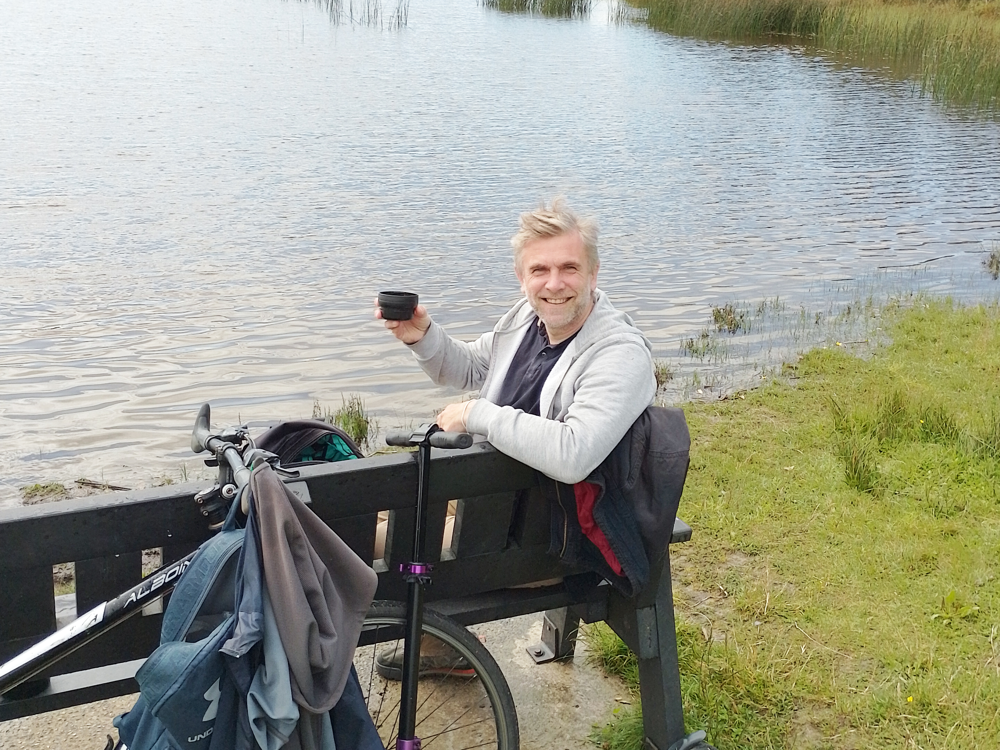

Авторство начинается не с таланта, профессии или публичного признания. Оно начинается в тот момент, когда человек перестаёт жить так, будто его жизнь уже кем-то написана заранее. Пока человек только реагирует, приспосабливается, оправдывается, спасается или ждёт разрешения, он может быть умным, сильным, успешным, но внутри всё равно оставаться не у руля. Авторство — это возвращение за руль собственной жизни.
Быть автором — не значит контролировать всё. Мир больше человека. В нём есть случайности, потери, ограничения, чужие решения, усталость, прошлое, тело, время. Авторство не отменяет реальность. Наоборот, оно начинается с согласия увидеть реальность такой, какая она есть. Не приукрашивать её, не воевать с ней бесконечно, не требовать, чтобы она немедленно стала удобной.
Человек становится автором, когда начинает отличать свою внутреннюю правду от шума. От страха, от привычки, от ожиданий других людей, от старых сценариев, от желания понравиться, от автоматических реакций. Внутренняя правда редко звучит громко. Она не всегда героическая. Иногда она очень простая: я устал. Я хочу иначе. Мне больно. Я больше не хочу предавать себя. Я готов сделать маленький шаг.
Авторство — это не красивая поза. Это ежедневная практика согласованности. Думать одно и делать другое — тяжело. Хотеть одного и всё время выбирать противоположное — разрушительно. Говорить себе неправду — дорого. Поэтому авторство требует честности, но не жестокости. Человек не становится автором через насилие над собой. Он становится автором через ясность, бережность и ответственность.
Ответственность в этом смысле — не вина. Это согласие признать своё влияние. Пусть даже маленькое. Пусть даже сегодня влияние — это только не сорваться, не убежать, не обесценить себя, не отложить жизнь ещё на один день. Автор не обязан сразу построить великую судьбу. Но он может перестать жить так, будто его выбора не существует.
Самое важное в авторстве — право на собственную линию. Не чужую идеальную жизнь, не правильную биографию, не сценарий, который должен кому-то понравиться. У каждого человека есть внутренняя форма. Свой ритм, своя глубина, своя боль, своя сила, свой способ любить, работать, ошибаться, начинать заново. Авторство — это когда человек постепенно перестаёт стыдиться этой формы и начинает строить жизнь из неё.
Автор — это не тот, кто всегда уверен. Автор — это тот, кто возвращается. К себе. К телу. К настоящему моменту. К своему решению. К правде. К действию. Он может сомневаться, падать, злиться, уставать, путаться. Но внутри у него появляется точка: моя жизнь не происходит мимо меня. Я участвую. Я выбираю. Я отвечаю. Я имею право быть на своей стороне.
И, возможно, именно с этого начинается настоящая зрелость человека: не с громких обещаний стать лучше, а с тихого внутреннего согласия больше не исчезать из собственной жизни.